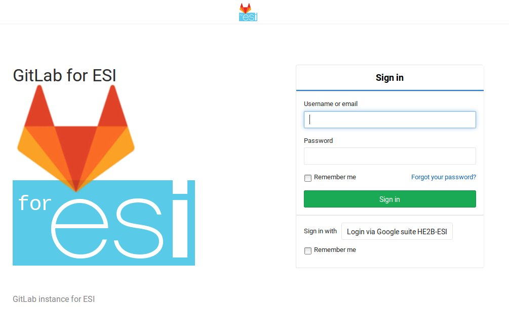
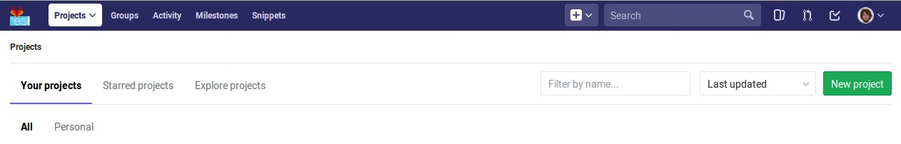
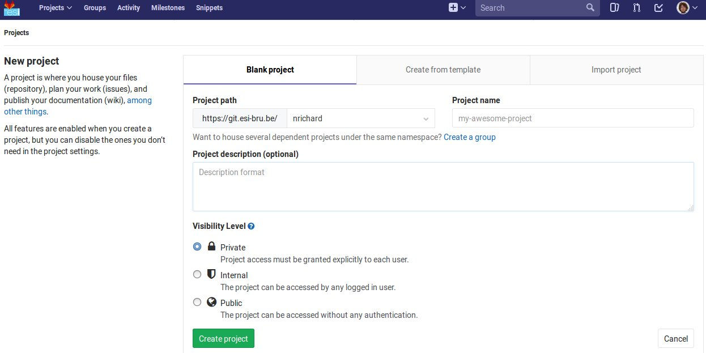
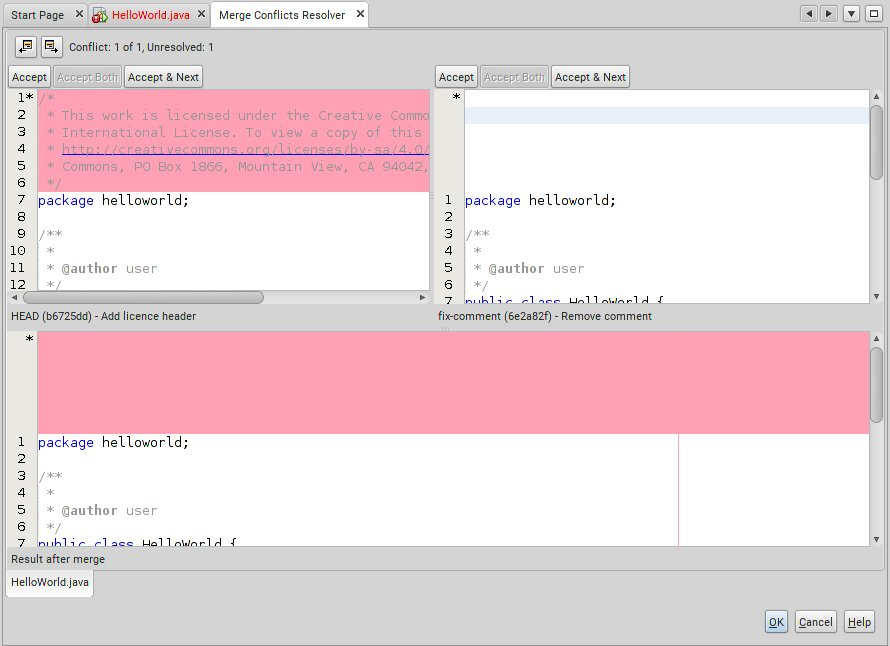

git - the stupid content tracker
Table of Contents
1 Contexte
1.1 But
Le but du TD est d'apprendre le maniement basique de Git.
Git est un logiciel de gestion de versions ("revision control" ou "version control"). Ce type de logiciels, et git en particulier, est utilisé par de nombreux développeurs, tant en solitaire qu'en équipes, notamment pour :
- revenir et comparer différentes versions de leur code ou tout document stocké comme un texte,
- comprendre l'apparition de bugs éventuels
- travailler en équipe
Au travers de ce TD nous vous montrerons comment Git aide à réaliser ces objectifs.
1.2 Pré-requis
Les pré-requis sont l'utilisation basique :
- de la ligne de commande sur Git Bash et linux1
- éditer des fichiers
- lancer des commandes
- copier-coller depuis Windows vers linux1,
- de Netbeans
- créer un projet Java
- du langage Java
- écriture sur la sortie standard
En particulier, aucune connaissance (pratique ou théorique) de Git n'est requise pour ce TD.
1.3 Savoirs terminaux
Voici les commandes que vous connaitrez à la fin de ce TD. Revenez-y en fin de TD pour vérifier que vous comprenez chacune d'elle.
git init git status git add <file>... git commit -m <message> git log [--all] [--graph] [--oneline] git show <commit> git remote add <name> <url> git remote -v git remote update
Les commandes suivantes sont
git diff git diff <commit1> <commit2> git merge <branch> gitk git branch [-a]
Nous décrirons également le fichier .gitignore.
1.4 Fonctionnement du document
Lisez les explications ci-dessous.
Le document est conçu pour une lecture à deux niveaux :
- En première lecture, vous pouvez vous concentrer sur différentes actions à réaliser indiquée par le marquage "Action" sur fond rouge (voir ci-dessus). Ces actions consistent généralement en commandes à recopier, adapter et lancer.
- Lorsque vous voulez un complément d'information, lisez le texte autour. Ce dernier fournira peut-être des réponses à des questions que vous vous posez (généralement "Pourquoi ?").
Certaines de vos questions ne trouveront pas de réponse dans le texte. À vous de les poser à vos condisciples et à vos enseignants.
Soyez curieux ! Quelques pistes de réflexions, pour aller plus loin, sont parfois suggérées par le marquage "Astuce", mais n'hésitez pas à vous lancer en dehors des sentiers.
2 Contenu
2.1 Introduction
2.1.1 Notion de contrôle de version
Si vous avez déjà écrit un document un peu long, vous vous êtes sans doute déjà trouvé dans la situation où, après une grosse modification, vous changez d'avis et décidez que la version précédente était meilleure.
La façon la plus courante de s'en sortir est simplement de faire des
copies de votre travail avant (ou après) chaque modification importante.
Si vous écrivez un fichier monTravail.txt et que tout va bien, les
versions se succèdent simplement et ça doit donner ceci :
monTravail-version-du-3-juin.txt monTravail-version-du-12-juin.txt monTravail-version-du-13-juin.txt monTravail.txt <= Ceci est la version finale.

Cela fonctionne assez bien mais nous verrons que même dans ce cas simple, Git peut nous aider.
Cependant, en pratique, il est plus probable que vous obteniez des fichiers un peu comme ceci (dans l'ordre chronologique) :
monTravail-version-du-3-juin.txt monTravail-version-du-12-juin.txt monTravail-version-finale.txt monTravail-version-finale-avec-remerciements.txt monTravail-version-finale-corrigée.txt monTravail-version-finale-corrigée-avec-remerciements.txt monTravail-version-vraiment-finale.txt monTravail.txt <= Hm, à quoi ça correspond déjà ?
Ceci illustre un point : le processus de création n'est pas toujours linéaire, même quand on travaille tout seul. Essayez de représenter les liens logiques entre les différentes versions.
Voici une telle représentation :

En première approche, le travail avec Git ressemblera au travail sans Git :
- modification d'un document
- sauvegarde dans Git
- retour à l'étape 1 (sauf si le document est fini)
- fini !
À ce stade les aspects importants de Git sont notamment qu'il :
- va gérer pour vous les liens logiques entre les versions,
- vous propose des outils pour comparer des versions et revenir en arrière.
Par la suite, nous introduirons le travail collaboratif avec Git :
- modification du document
- sauvegarde dans Git
- récupération du travail des collaborateurs et comparaison puis fusion avec votre version
- retour à l'étape 1 (sauf si le document est fini)
- fini !
À ce stade, un nouvel aspect de Git sera important :
- Il vous propose des outils pour fusionner des versions différentes
2.1.2 Environnement de travail
Dans l'école, Git est déjà installé, tant sur les machines Windows que
sur le serveur linux1.
Lancez Git Bash via le menu Windows. Pour le trouver, ouvrez le
menu et tapez Bash. Git Bash devrait être le premier résultat.
Confirmez par la touchée Entrée.
Par ailleurs la conception de Git est telle que nous allons travailler
dans un répertoire dédié à notre projet. Cela peut vous sembler
étrange si vous pensez à l'exemple monTravail.txt (dans lequel il n'y
a finalement qu'un seul document en plusieurs versions) mais d'un autre
côté, un projet de programmation va généralement rassembler de nombreux
fichiers qu'il est naturel de mettre dans un répertoire dédié.
Créez et aller dans le répertoire ~/dev1/td-git/ex1/.
mkdir -p ~/dev1/td-git/ex1 puis cd ~/dev1/td-git/ex1
Si vous entrez d'abord mkdir -p ~/dev1/td-git/ex1, vous pouvez
obtenir la seconde commande en tapant cd suivi de Alt+.
(c'est-à-dire garder la touche Alt enfoncée taper le caractère .).
Cette dernière combinaison insère le dernier argument de la dernière
commande de l'historique. Une utilisation itérée permet de remonter dans
l'historique des commandes.
2.2 Création d'un dépôt Git et de commits
2.2.1 Initialisation : git init
Initialisez un "dépôt Git" dans le répertoire de travail avec
git init. Voyez-vous ce qui a changé dans le répertoire courant ?
Hint: Si vous ne voyez pas, pensez aux fichiers cachés.
Un répertoire .git est apparu (voir ls -a).
Le répertoire .git est le dépôt Git proprement dit. C'est lui qui
contiendra les différentes sauvegardes (nous dirons "commit"). Le
répertoire courant, quant à lui, est appelé "répertoire de travail".
Pour voir tous les fichiers (y compris dans les sous-répertoires) du répertoire courant, utilisez :
find . -type f
Essayez aussi find . tout seul pour voir la différence.
2.2.2 Intermède : créer un projet
Utiliser Git sans projet à construire, c'est un peu comme braquer une caméra de surveillance sur un mur.
Nous allons donc développer un projet. Il ne sera pas très ambitieux car le but est d'apprendre Git en moins de 2 heures, mais c'est mieux que rien.
Si vous avez un projet Java en tête, sentez-vous libre de remplacer le projet HelloWorld ci-dessous par votre propre projet. Pensez seulement à adapter les instructions et demandez de l'aide au besoin !
Lancez NetBeans et créez un projet de type Java Application dans
le répertoire Z:\dev1\td-git\. Nommez le projet HelloWorld puis
cliquez "Finish" mais ne faites rien de plus (ne compilez pas tout de
suite).
Les prochaines étapes consisteront en l'élaboration de notre projet. À chaque étape, nous allons sauver l'état du répertoire, comme une sauvegarde du travail.
2.2.3 Sélection des fichiers : git add
Revenez à Git Bash, et allez dans le répertoire de votre projet
HelloWorld. Inspectez le contenu de votre répertoire, puis créez un
dépôt Git dans ce répertoire.
cd ~/dev1/td-git/HelloWorld git init
Netbeans crée de nombreux fichiers dans le répertoire du projet, y compris dans des sous-répertoires. Nous n'allons pas détailler maintenant le contenu de ces fichiers, mais simplement accepter qu'ils sont là.
Si vous êtes curieux, vous pouvez regarder précisément quels
fichiers ont été créés par NetBeans (rappel: find . -type f).
Pour voir ce que Git "comprend" de votre répertoire, entrez :
git status
Cette commande ne modifie rien, mais montre l'état des choses. Nous apprendrons à comprendre ce qu'elle dit, mais pour l'heure concentrons nous sur:
Untracked files:
(use "git add <file>..." to include in what will be committed)
build.xml
manifest.mf
nbproject/
src/
nothing added to commit but untracked files present (use "git add" to track)
Git nous explique qu'il y a bien un dépôt à cet endroit (dans le cas contraire Git afficherait une erreur), mais qu'aucun fichier n'est suivi ("tracked"). En fait Git s'attend à ce qu'on lui dise précisément les fichiers à enregistrer, et il n'y en a pour l'instant aucun.
Commençons par indiquer que nous voulons sauvegarder tous les
fichiers du répertoire src :
git add src git status
Vous constatez une différence. Notez que Git a été chercher le fichier
.java dans un sous-répertoire.
Changeons d'avis, et indiquons maintenant que nous voulons en fait sauvegarder tous les fichiers du répertoire courant :
git add .
Pensez à lancer git status pour voir ce que Git a compris.
Notez toutefois que git add n'a pas encore réalisé la sauvegarde !
C'est une déclaration d'intention. Nous sommes prêt à lancer notre
premier sauvegarde. Git appelle cela un commit. Nous parlerons donc de
"faire un commit" ou de "committer".
Allez voir ce que "commit" veut dire dans un dictionnaire anglais, et voyez quel sens s'approche le plus de ce que nous faisons.
Par exemple dans le Oxford Learner's1 on trouve
commit something to memory : to learn something well enough to remember it exactly
2.2.4 Sauvegarde d'une version : git commit
Il est (presque) obligatoire, avec Git, de donner une description à nos commits.
Notre projet en est au stade où Netbeans a généré des fichiers, sans que rien d'autre n'ait été fait. Nous pouvons donc décrire l'état du projet par :
HelloWorld: projet créé avec Netbeans
Nous allons maintenant "committer" (c'est-à-dire sauvegarder) :
git commit -m "HelloWorld: projet créé avec Netbeans"
N.B.: N'oubliez pas les guillemets.
On peut omettre l'option -m et le message correspondant. Dans ce cas Git lance l'éditeur configuré (variable d'environnement EDITOR).
Lisez bien ce que Git vous répond et faites ce qui vous est suggéré (indiquez votre adresse email et votre nom).
git config --global user.email "xxx@student.he2b.be" git config --global user.name "Votre Nom"
et:
git commit --amend --reset-author --no-edit
Vérifiez que Git a bien sauvé votre projet avec git status.
La réponse devrait être:
On branch master nothing to commit, working directory clean
2.2.5 Laisser des fichiers de côté : .gitignore
Il arrive d'avoir des fichiers que nous ne voulons pas suivre avec Git. (Il s'agit souvent de fichiers générés automatiquement, par exemple au moment de la phase de compilation.) Voyons comment ignorer de tels fichiers.
Avant chacune des étapes suivantes, utilisez ls -A et
git status pour voir l'état de votre répertoire de travail et de votre
dépôt Git.
- Lancez:
touch qsdf - Indiquez à git d'ignorer
qsdfavec:echo qsdf > .gitignore - Nettoyez tout cela avec
rm qsdf .gitignore.
Qu'avez vous constaté ?
- Après la première étape,
qsdfest apparu. - À la seconde,
qsdfa été ignoré par Git (mais toujours présent), mais.gitignoreest apparu. - À la troisième étape,
qsdfet.gitignoreont disparu.
Cherchez ce que fait touch sur le Web.
Le sens du symbole > vous sera expliqué dans un TD ultérieur
(c'est une redirection)
Nous utiliserons ce fichier .gitignore pour éviter que certains types
de fichiers apparaissent dans git status et fassent partie du commit.
Par exemple les fichiers .class seront ignorés de la sorte : ils sont
re-générés à chaque compilation, ils ne sont donc pas nécessaires pour
notre projet. En fait nous allons ignorer tout ce qui se trouvera dans
le répertoire build.
- Ignorez le répertoire
build/(de la même manière que nous avions ignoréqsdf). - Incluez
.gitignoredans un commit dont le message est ".gitignore: ignore build/ directory"
echo build/ > .gitignore git add .gitignore git commit -m "Ignore le répertoire 'build'"
2.2.6 Intermède : avancer dans le projet
Il est temps d'avancer dans votre projet en suivant les étapes suivantes:
- Modifier quelque chose (par exemple sous Netbeans, ou tout autre éditeur)
- Ajouter les fichiers modifiés avec
git add(utilisezgit statuspour voir ce qui est modifié). - Committer.
- Retour à l'étape 1 pour continuer à avancer.
Pour HelloWorld nous vous proposons les quelques étapes simples
suivantes.
Notez qu'il est possible que .gitignore soit encore modifié
automatiquement par Netbeans. Vous pouvez committer ces changements.
- Faites afficher "Hello, World !" à votre programme java.
- Modifiez votre code sous Netbeans (et testez avec F6) pour que votre application affiche "Hello, World !" sur la sortie standard.
- Retournez dans Git Bash, et utilisez
git statuspour constater que votre fichier .java a été modifié - Créez un commit incluant ce fichier
.java.
Dans Netbeans, tapez
soutsuivi d'un appui sur la touche TAB pour insérer automatiquement de quoi écrire sur la sortie standard. - La suite du projet
Nous développerons notre projet plus tard. Passons à autre chose.
2.2.7 Une explication sur la notion de commit
Un commit est un enregistrement de l'état de votre répertoire de travail à un moment donné.
Dans un commit, les informations suivantes sont enregistrées :
- L'état du répertoire de travail
- L'auteur du commit
- Le nom du commit qui précède (appelé aussi "commit parent")
Comment Git sait-il, au moment de créer un nouveau, quel est le commit qui précède ? La réponse est assez simple : il y a un concept de "commit courant" et, au moment de créer un nouveau commit, Git fait notamment deux choses:
- le "commit courant" est désigné comme étant le "parent" du nouveau commit, et
- le nouveau commit devient le nouveau "commit courant".
Pour en savoir plus, vous pourrez aller voir l'annexe Anatomie d'un commit.
2.3 Affichage de l'historique et des commits
2.3.1 Affichage l'historique
Pour voir l'évolution de votre dépôt de son origine jusqu'à maintenant, tapez
git log
Vous devriez y retrouver tous vos commits avec leur description. Le plus récent (= le commit courant) est en haut.
Ici, vous avez une vue d'ensemble de l'histoire de votre dépôt. Chaque commit succède à son parent (à l'exception du premier, tout en bas, qui n'a pas de parent).
2.3.2 Lecture d'un commit
Dans le log, notez que chaque commit commence par une ligne du type:
commit 9941d89f56fbbcd3c8fbe29570af23c89e1708c5
Ce qui se trouve à côté du mot "commit" est le nom du commit, toujours constitué de 40 caractères (des chiffres hexadécimaux). Nous l'appelons le "hash" du commit (en français nous dirons parfois "haché").
Ce hash est produit par une fonction "de hachage" appelée SHA-1. Vous reverrez encore SHA-1 et d'autres fonctions de hachage en d'autres occasions.
Pour désigner un commit, on peut généralement se contenter des 7 premiers caractères de son hash.
Notez les 7 premiers caractères du dernier commit de votre
dépôt (dans l'exemple c'est 9941d89), et utilisez-les comme suit:
git show 9941d89
Que se passe-t-il si vous mettez moins que 7 caractères ?
Le résultat devrait être similaire à ceci:
commit 9941d89f56fbbcd3c8fbe29570af23c89e1708c5
Author: Nicolas Richard <youngfrog@members.fsf.org>
Date: Mon May 28 17:03:36 2018 +0200
Hello, World !
diff --git a/src/helloworld/HelloWorld.java b/src/helloworld/HelloWorld.java
index c49e653..206c27d 100644
--- a/src/helloworld/HelloWorld.java
+++ b/src/helloworld/HelloWorld.java
@@ -15,7 +15,7 @@ public class HelloWorld {
* @param args the command line arguments
*/
public static void main(String[] args) {
- // TODO code application logic here
+ System.out.println("Hello, World !");
}
}
Les lignes entre diff --git ... et @@ ... peuvent rester
mystérieuses, mais le reste devrait vous sembler familier. Prenez deux
minutes pour comprendre.
Les premières lignes indiquent le nom du commit, le nom de l'auteur du commit, la date à laquelle le commit a été fait.
Les lignes suivantes forment la description (que vous avez fournie) du commit.
Suivent quelques lignes mystérieuses (jusque @@ ... @@ ...) et enfin
le "diff" du commit, c'est-à-dire une liste des différences entre ce
commit et son parent.
Dans le diff, chaque ligne commence par un symbole +, -, ou ` `, qui
veulent dire que la ligne a été, respectivmeent, "ajoutée", "enlevée" ou
"non-modifiée".
On peut produire un diff entre deux fichiers texte grâce à la
commande diff -u fichier1 fichier2, mais c'est généralement plus
coloré si on demande à Git : git diff --no-index fichier1 fichier2.
Les options --word-diff et -w (équivalent à --ignore-all-space) sont
intéressantes. git help diff vous en dira plus sur les options
disponibles.
2.3.3 Un outil graphique : gitk
Testez la commande gitk pour avoir une autre vue de votre
historique. Nous l'utiliserons encore plus tard.
2.4 Partage et collaboration : ajout de remotes
Nous l'avons dit : Git permet de travailler en équipe.
Dans un premier temps nous allons vous faire travailler en équipe… avec vous-même.
Supposons que vous avez développé un code à l'école et que vous voulez le continuer chez vous. Comment feriez-vous pour récupérer votre code d'une machine à une autre ?
On peut utiliser une clef USB, un "cloud" (NextCloud, Google Drive, etc.),… ou Git, bien sûr.
2.4.1 Les principes
- Principe de collaboration
Le principe que nous allons détailler est le suivant:
- Vous travaillez actuellement sur une machine (Machine1)
- Vous envoyez par le réseau votre travail sur une machine distante (un "serveur") allumée en permanence (Machine1 => Gitlab)
- Vous passez sur une autre machine, par exemple votre ordinateur portable ou une autre machine dans l'école (Machine2)
- Vous récupérez par le réseau votre travail sur la nouvelle machine à partir du serveur. (Gitlab => Machine2).

Il est possible de se passer d'un dépôt Gitlab au centre du processus, et de faire communiquer directement les deux Machine{1,2}, cependant cela implique d'une part que les deux machines restent allumées pendant le transfert, d'autre part cela force à créer des accès d'une machine à l'autre. Petit exercice de mathématiques : si on a N machines et qu'on veut qu'elles puissent communiquer deux à deux de façon directe, combien de liens faut-il établir ? Autre question : si on a N machines et qu'on veut qu'elles puissent communiquer deux à deux via un tiers jouant le rôle de serveur central, combien de liens faut-il établir ?
N(N-1)/2 dans le premier cas, et N dans le second cas.
- Principe technique
Techniquement, chaque dépôt Git peut être considéré comme étant un recueil de commits, ou un magasin de commits
Chaque personne participant au projet a son (ou ses) dépôt(s) mais, pour Git, peu importe qui contrôle tel ou tel dépôt. Tous les dépôts sont équivalents.
Dans un dépôt donné, pour y ajouter des commits, on a deux manières de faire:
- créer des commits, comme on l'a fait précédemment (avec
git commit), ou - récupérer des commits venus d'autres dépôts, ce que nous allons faire ici.
Une fois les commits récupérés, on a toujours le loisir de les utiliser ou de ne pas le faire ; de la même manière que nous pouvons aller acheter des livres et ne jamais les lire.
- créer des commits, comme on l'a fait précédemment (avec
2.4.2 Gitlab
Les étapes à suivre sont :
- Créer un dépôt sur votre machine actuelle avec du contenu (ça, c'est déjà fait).
- Créer un dépôt sur Gitlab.
- Envoyer le contenu du premier dans le second.
- Changer de machine.
- Créer un dépôt sur la nouvelle machine.
- Récupérer le contenu du dépôt Gitlab dans ce dernier dépôt.
Une fois tout mis en place, le travail ressemblera à :
- Travailler sur une machine et committer au fur et à mesure
- Envoyer sur Gitlab
- Aller sur une autre machine
- Récupérer le travail depuis Gitlab
- retour à 1.
- Connexion à Gitlab
Avec votre navigateur (Firefox, Chrome, …), connectez vous à Gitlab en utilisant votre compte HE2B-ESI (Google).

Vous le constatez, Gitlab se présente sous la forme d'un serveur Web. Nous n'avons pas accès à la ligne de commande sur ce serveur, mais, rassurez-vous, cela n'est pas tellement plus difficile !
Allez dans vos paramètres Gitlab (cliquez sur l'icône en haut à droite puis Settings) et choisissez la rubrique Password puis enfin I forgot my password.
Vous allez recevoir un email (vérifiez votre répertoire Spam si vous ne le recevez pas après quelques secondes). Avant de cliquer sur "Reset password" dans cet email, déconnectez-vous de Gitlab !
En attendant cet email, vous pouvez poursuivre le labo…
- Création du dépôt sur Gitlab
Retournez sur la page principale de Gitlab (par exemple par un clic sur le logo qui se trouve en haut à gauche) et utilisez le bouton vert "New project" sur la droite.

Donnez un nom à votre projet (pour nous: HelloWorld), et une brève description si vous le souhaitez. Prenez une note mentale du "Project path" (pour l'auteur de la capture d'écran il s'agit de
https://git.esi-bru.be/nrichard), puis pressez le bouton vert: Create project.
- Indiquez à Git l'emplacement du serveur:
git remote
Dans Git Bash, tapotez ceci en modifiant l'URL là où c'est nécessaire:
git remote add esi-gitlab https://git.esi-bru.be/nrichard/HelloWorld
Si vous avez mis la mauvaise URL, vous pouvez la modifier:
git remote set-url esi-gitlab https://cette-fois.il/faut/pas/se/planter
Dans ce qui précède,
esi-gitlabest désormais le nom de notre dépôt distant ("remote" ou "remote repository" en anglais), c'est-à-dire un dépôt Git différent du dépôt dans lequel vous vous trouvez (~/dev1/td-git/HelloWorld/). Vous auriez pu choisir n'importe quel autre nom.Vérifiez avec
git remote -vque l'URL est correcte. - Déposez votre travail sur le dépôt distant.
Nous allons indiquer à Git deux choses :
- On veut utiliser ce dépôt distant
esi-gitlab(pour pouvoir y mettre notre travail) - On veut y mettre notre travail maintenant
Attention: Pour cette étape vous aurez besoin du mot de passe défini pour Gitlab. Si vous n'avez pas encore reçu le mail, allez voir le dossier Spam. N'oubliez pas de vous déconnecter de Gitlab avant de cliquer sur "Reset password" dans le mail. Votre nom d'utilisateur
Tapez:
git push -u esi-gitlab master
Le paramètre
-uindique à Git qu'il faudra encore utiliser ce dépôt distant à l'avenir. Le motmasterva rester mystérieux jusqu'à ce que nous parlions de branches. - On veut utiliser ce dépôt distant
- Vérifiez que tout est en ligne
Retournez sur le site Web Gitlab, rafraichissez la page et vérifiez que vous retrouvez vos commits.
2.4.3 linux1
- Connexion à linux1
Avec PuTTY, connectez-vous à
linux1.Créez puis allez dans le répertoire
~/mesprojets/. - Créer un dépôt et récupérer le contenu du dépôt Gitlab
Nous allons maintenant créer un dépôt sur
linux1et y rapatrier le code qui se trouve sur Gitlab, le tout en une seule étape facile.Tapez
git clone https://git.esi-bru.be/nrichard/HelloWorld(Modifiez pour refléter votre propre dépôt Gitlab).Allez voir le répertoire
HelloWorldet vérifiez que tout y est avec tout ce que vous connaissez:cd HelloWorld ls git status git remote -v
Un dépôt distant a été automatiquement déclaré, et il s'appelle
origin.Renommez le dépôt distant
origin:git remote rename origin esi-gitlab
2.4.4 Et ensuite…
Nous avons utilisé linux1 comme "autre machine". Vous pourriez
utiliser n'importe quelle autre machine à la place, par exemple la votre
à la maison, votre portable, une autre machine de l'école, etc.
Quelle que soit la machine, vous avez sans doute envie de pouvoir y travailler, et puis de pouvoir récupérer ce travail sur votre machine de départ.
Pour ce faire suivez la recette suivante :
- Committez et tapez
git pushavant de quitter une machine. - Utilisez
git clonequand vous utilisez une nouvelle machine (cela crée un nouveau dépôt). - tapez
git pulldans un dépôt pour le mettre à jour (c'est-à-dire quand vous utilisez une machine sur laquelle le dépôt est déjà présent).
3 Pour aller plus loin…
La suite de ce document pourra vous être utile mais ne fait pas partie de la matière d'examen.
3.1 Les branches
3.1.1 Les principes
- Notion de branche
Jusqu'à présent vous avez
- fait évoluer votre projet dans Git Bash, et
- récupéré ce projet sur linux1 (via Gitlab)
Vous avez donc une copie de votre projet sur chaque machine, et vous pourriez créer des commits sur l'une ou sur l'autre machine.

On parlera de branches : comme sur un arbre, depuis un tronc commun, plusieurs branches peuvent pousser dans des directions différentes.
Cependant, contrairement aux arbres, nous voudrons à un moment réconcilier (fusionner) ces changements, et les branches vont alors se rejoindre :

Pour vous familiariser avec cette idée de branche, allez sur Learn Git Branching et essayez les commandes suivantes tout en visualisant ce qui se passe dans la fenêtre de droite. Notez la petite étoile * à côté du nom d'une des branches.
git commit git branch mabranche git commit git checkout mabranche git commit git checkout master git merge mabranche git commit git merge mabranche git checkout mabranche git commit git commit git checkout master git merge mabranche git checkout mabranche git merge master
Ce que vous pouvez retirer de cette expérience :
- Vous pouvez créer des branches avec
git branch nom-de-branche - Vous pouvez désigner une autre branche comme "branche courante" (= la
branche avec la petite étoile sur le site) avec
git checkout nom-de-branche - Lorsque vous committez, c'est la branche courante qui grandit.
- Vous pouvez fusionner une branche à la branche courante avec la commande
git merge nom-de-branche(dans ce cas c'est la branche courante qui avance, maisnom-de-branchene bouge pas). - Deux branches peuvent être confondues (c'est le cas de
mabrancheetmasterà la fin de la procédure ci-dessus.)
Pour en savoir plus sur la notion de branche, lisez l'annexe 4.1.
3.1.2 Modification du projet (linux1)
Revenant à notre projet, nous allons voir comment une modification et un commit sur linux1 vont se concrétiser sous forme d'une nouvelle branche, vu depuis Git Bash.
- Configurez Git
Configurez Git sous linux1:
git config --global user.email "xxx@student.he2b.be" git config --global user.name "Votre Nom"
- Ajoutez un test pour votre programme
Créez le fichier
test.shdans~/mesprojets/HelloWorld/avec le contenu suivant:#!/bin/sh compileProject () { mkdir -p build/ javac -d build/ src/helloworld/HelloWorld.java } runProject () { java -cp build/ helloworld.HelloWorld } expected_output='Hello, World !' compileProject output=$(runProject) if [ "$output" = "$expected_output" ]; then echo Test réussi. else echo Test échoué. echo Sortie attendue: $expected_output echo Sortie obtenue: $output fiLancez le test avec
sh test.shet "Test réussi." doit s'afficher à la fin. Lorsque cela fonctionne, committez.git add test.sh git commit -m "test.sh: nouveau fichier"
- Envoyez le résultat sur Gitlab (
git.esi-bru.be)
Pour envoyer sur Gitlab, on pourrait se demander s'il ne faut pas d'abord ajouter Gitlab comme dépôt distant. Mais rappelez-vous de la sortie de
git remote -vjuste après avoir exécutégit clone. Git l'a ajouté pour vous !Lancez
git push
Optionellement vous pouviez ajouter le nom du dépôt distant. La commande suivante fera donc la même chose que la précédente :
git push esi-gitlab
Pour rappel :
esi-gitlabest le nom que nous avions donné au dépôt distant après l'avoir cloné. Par défaut c'étaitorigin.
3.1.3 Modification du projet (Git Bash)
Modifiez, sous Netbeans, le texte qui suit @author pour y indiquer votre nom. Ensuite, committez ce changement (sous Git Bash).
3.1.4 Récupération : linux1 vers Git Bash.
Pour récupérer le contenu de votre dépôt distant (remote) Gitlab, lancez
git remote update
Cette commande a mis à jour la branche qui correspond au contenu de Gitlab… mais pas encore vos fichiers de travail. Pour cela il faudra attendre la section diff et merge.
3.1.5 Voir les branches : git branch
Tapez
git branch
Vous constatez qu'il n'y a qu'une seule branche: master. En réalité il
y en a plus, mais elles sont cachées.
Tapez
git branch -a
Vous constatez qu'il y a des branches distantes:
remotes/esi-gitlab/HEAD -> esi-gitlab/master remotes/esi-gitlab/master
C'est là qu'est caché le travail que nous avions mis sur linux1
3.2 Lecture de l'historique (variante arborescente)
Regardez l'historique de votre dépôt.
git log
Aucune trace du commit réalisé sur linux1. C'est normal, il n'a pas
encore été fusionné à votre dépôt Git Bash.
Regardez l'historique de toutes les branches
git log --all
Normalement vous retrouvez ici le commit créé sur linux1. Pour mieux
comprendre cet historique,nous allons demander à Git un petit dessin
(--graph). Nous lui demandons aussi de donner moins d'information sur
chaque commit afin que chacun tienne sur une ligne (--oneline).
Lancez:
git log --all --graph --oneline
Vous constatez alors qu'il y a une bifurcation.
Alternativement, vous pouvez lancer:
gitk --all
et voir le résultat dans gitk.
3.3 diff et merge
Nous avons deux branches qui ont divergé : master et
esi-gitlab/master.
Rappelons que master est la branche courante. Le répertoire de travail
contient donc normalement la même chose que cette branche (à l'exception
éventuelle des modifications répertoriées par git status).
3.3.1 Comparaison : diff
Lancez la commande suivante et observez le résultat.
git diff master esi-gitlab/master
3.3.2 Fusion : merge
Lancez la commande
git merge esi-gitlab/master
Le programme vim se lance en vous proposant de donner un message pour
décrire la fusion. Lorsque ce message vous agrée, vous pouvez simplement
sauver et quitter en tapant :x.
Tapez immédiatement :x pour utiliser le message proposé par
défaut.
Notez que Git réalise la fusion de façon entièrement automatisée quand il estime qu'il peut le faire.
En quelques mots la procédure est la suivante :
- Git détermine un commit qui est ancêtre commun aux deux branches (le point de bifurcation des branches).
- Git vérifie compare les modifications apportées par le bout de chaque branches par rapport à cet ancêtre.
- Si ces modifications ont l'air indépendantes (par exemple : les fichiers modifiés ne sont pas les mêmes, ou alors les modifications sont dans des endroits assez éloignés d'un même fichier), Git procède à la fusion des changements.
Vous pouvez modifier l'éditeur par défaut de diverses manière. L'une d'elle consiste à modifier l'éditeur par défaut uniquement pour git, par exemple pour utiliser Notepad++ :
git config --global core.editor
"'C:/Program Files (x86)/Notepad++/notepad++.exe'
-multiInst -notabbar -nosession -noPlugin"
(Pour la lisibilité, cette commande est sur plusieurs lignes mais il faut l'introduire en une seule ligne.)
3.4 Lecture de l'historique (variante DAG)
Lancez la commande suivante et observez le résultat.
gitk --all
3.5 Gestion des conflits de fusion
Il peut arriver que survienne un conflit de fusion. C'est à dire que Git estime ne pas pouvoir sereinement fusionner les modifications entre deux branches.
Pour tester cela, créons un tel conflit en modifiant un texte de deux façons différentes (dans des branches différentes).
Créez une nouvelle branche remove-comments
git branch remove-comments git checkout remove-comments
Ces deux commandes sont équivalentes à l'unique commande
suivante : git checkout -b remove-comments. Lisez la decsription de
-b dans git help checkout pour vous en convaincre.
Dans Netbeans, enlevez le commentaire généré par Netbeans en haut du fichier, puis committez cette modification avec le message "Remove auto-generated comments".
Revenez à la branche master:
git checkout master
Dans Netbeans, constatez que le commentaire en haut du fichier est revenu. Si ce n'est pas le cas après cinq secondes d'attente, allez dans le menu Source puis choisissez Scan for external changes (tout en bas de ce menu).
Dans Netbeans, modifiez le commentaire en haut du fichier comme le voulez, puis committez.
Par exemple vous pourriez écrire ceci à la place :
/* * This work is licensed under the Creative Commons Attribution-ShareAlike 4.0 * International License. To view a copy of this license, visit * http://creativecommons.org/licenses/by-sa/4.0/ or send a letter to Creative * Commons, PO Box 1866, Mountain View, CA 94042, USA. */
Fusionnez la branche fix-comment.
Le résultat doit être un message tel que celui-ci :
Auto-merging src/helloworld/HelloWorld.java CONFLICT (content): Merge conflict in src/helloworld/HelloWorld.java Automatic merge failed; fix conflicts and then commit the result.
Décodons :
- (Tentative de) fusion automatique.
- Conflit détecté dans
<nom de fichier>. - Fusion automatique a échoué : à vous de jouer.
Retournez dans Netbeans. Vous y trouverez des "marqueurs de conflit de fusion"
(merge conflict markers): , ======= et
.
Voici à quoi pourrait ressembler le haut de votre fichier :
<<<<<<< HEAD /* * This work is licensed under the Creative Commons Attribution-ShareAlike 4.0 * International License. To view a copy of this license, visit * http://creativecommons.org/licenses/by-sa/4.0/ or send a letter to Creative * Commons, PO Box 1866, Mountain View, CA 94042, USA. */ ======= >>>>>>> fix-comment package helloworld;
Décryptage :
- HEAD est un nom donné par Git au "commit courant", quel qu'il soit.
- Les trois marqueurs délimitent la zone de conflit (entre
<<<<<<<et>>>>>>>) et la divisent en deux zones (une avant les=======, et une après) : - La zone du haut correspond aux changements introduits par la branche
où vous vous trouviez (dans le cas présent :
master). Plus précisément : les changements entre HEAD et l'ancêtre commun à HEAD et à la branche fusionnée. - La zone du bas correspond aux changements introduits par la branche
fusionnée (dans le cas présent :
fix-comment). - fix-comment est le nom de la branche fusionnée.
Pour résoudre le conflit, vous pouvez soit:
- le faire à la main : modifiez la zone de conflit pour qu'elle corresponde à ce que doit être votre code après fusion, puis enlevez les marqueurs.
- demander à un outil externe, tel que Netbeans, ce que nous allons faire ici.
Dans le menu Team, choisissez "Resolve Conflicts".

La fenêtre principale se divise en trois :
- la zone en haut à gauche est la version
HEAD(c'est-à-diremaster), - la zone en haut à droite est la version
fix-comment, et - la zone en bas est le produit de la fusion.
Cliquez sur Accept au dessus de la version de gauche, puis Ok en bas à droite et sauvez le résultat.
Dans Git Bash, lancez git status
On branch master All conflicts fixed but you are still merging. (use "git commit" to conclude merge) nothing to commit, working directory clean
Lancez git commit -m "Fusion: ajoute une licence" pour
terminer la fusion.
Si vous ne spécifiez pas "-m", un éditeur (par défaut vim) se
lance pour que vous écriviez votre description. Celui-ci peut comporter
plusieurs lignes, et généralement on écrit d'abord un résumé d'une
ligne (idéalement moins de 80 caractères), puis une ligne vide, puis un message détaillé.
3.6 git et NetBeans
Comme vous l'avez noté dans le menu Team, Netbeans offre une certaine dose d'intégration avec Git. À vous de découvrir ce que vous pouvez faire depuis Netbeans.
4 Annexe
4.1 Notion de branche, version abstraite
Techniquement, une branche est simplement un fichier dans
.git/refs/heads/.
Comme on l'a déjà dit, un dépôt Git est un magasin de commits. Ces commits ont une structure de graphe dirigé : chaque commit pointe vers son parent (ou ses parents, en cas de fusion). Dès lors à partir d'un commit quelconque, on peut "remonter la filière" en suivant ce lien de parenté. Toutefois, un dépôt Git contient souvent des commits "cachés", qui ne sont plus référencés nulle part.
Exemple parallèle : dans une bibliothèque publique, il y a des milliers de livres. Pour s'y retrouver les bibliothécaires tiennent une liste des livres (c'est le catalogue de la bibliothèque, qui est d'ailleurs généralement informatisé). Pour trouver un livre, on va voir la liste, qui contient l'emplacement, et puis on peut physiquement récupérer le livre. Si un livre n'est pas dans la liste, personne ne l'empruntera jamais, même s'il est dans la bibliothèque : il est "caché" (ou "perdu" selon votre niveau d'optimisme).
Dans un dépôt Git, c'est similaire et cependant différent.
- C'est similaire en ce sens qu'il y a généralement des milliers de commits, et que pour retrouver un commit il faut qu'il soit référencé quelque part. Les références sont les branches : si un commit est sur une branche, on le retrouvera. Sinon il est "caché".
- C'est cependant différent parce qu'il ne faut pas autant de branches que de commits. On retrouvera un commit s'il est le bout d'une branche, ou s'il est le parent d'un bout de branche, ou s'il est le parent d'un parent d'un bout de branche, et ainsi de suite.
- (Une autre différence est liée au fait que nous parlons ici de
fichiers informatiques : il est en fait aisé de lister tous les
commits jamais référencés, et de chercher parmi ceux-là ceux qui ont
des propriétés qui nous intéressent. Voyez
git help fscket en particulier les options--danglinget--lost-foundpour des détails techniques bien au delà du cadre du présent document.)
4.2 Anatomie d'un commit
Un commit n'est en réalité rien d'autre qu'un petit fichier texte. On
peut en inspecter le contenu avec git cat-file, par exemple :
git cat-file commit HEAD